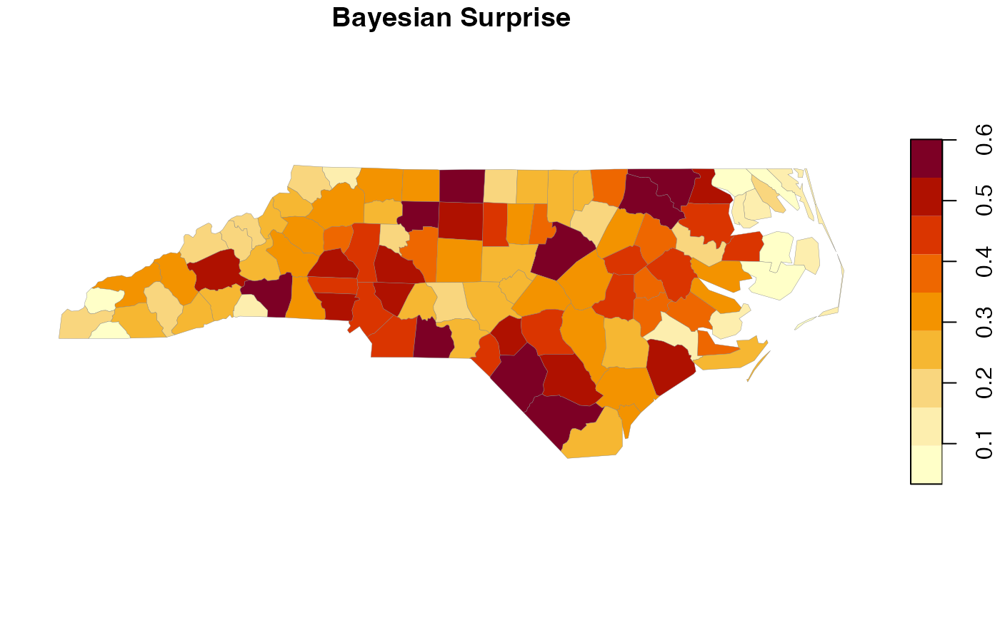
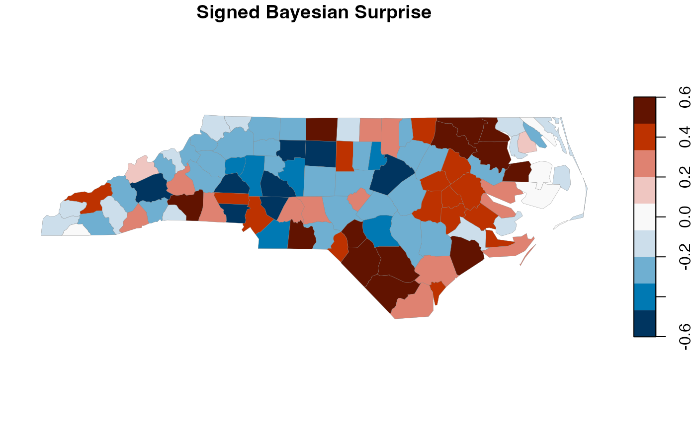
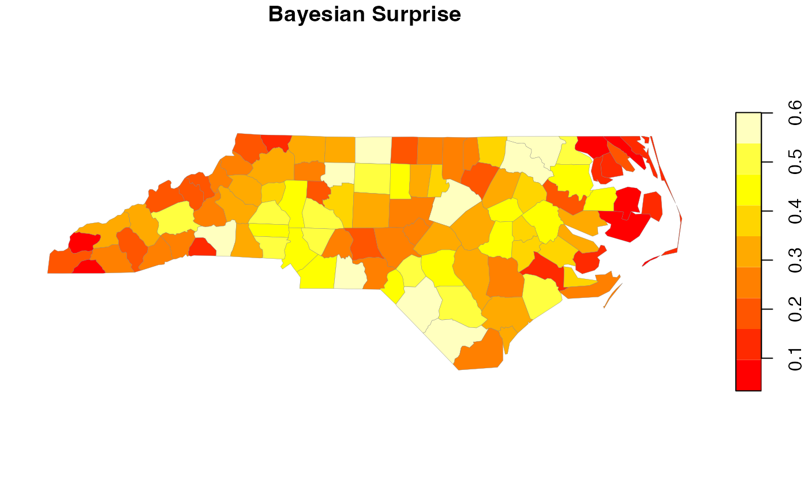

Plots a surprise map using sf's plot method. For ggplot2 integration,
see geom_surprise() and scale_fill_surprise().
Arguments
- x
A
bs_surprise_sfobject- y
Unused (for S3 method compatibility)
- which
Which variable to plot: "surprise" or "signed_surprise"
- pal
Color palette. If NULL, uses default diverging palette for signed surprise and sequential for unsigned.
- breaks
Breaks for color scale. If NULL, uses pretty breaks.
- nbreaks
Number of breaks if
breaksis NULL- main
Plot title. If NULL, auto-generated.
- border
Border color for polygons
- lwd
Line width for borders
- key.pos
Position of legend (1=below, 2=left, 3=above, 4=right, NULL=none)
- ...
Additional arguments passed to
sf::plot()
Examples
library(sf)
nc <- st_read(system.file("shape/nc.shp", package = "sf"), quiet = TRUE)
result <- surprise(nc, observed = SID74, expected = BIR74)
# Default plot
plot(result)

# Plot signed surprise
plot(result, which = "signed_surprise")

# Custom palette
plot(result, pal = heat.colors(9))
